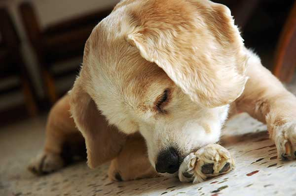
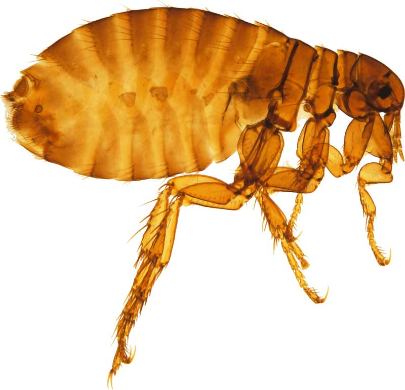
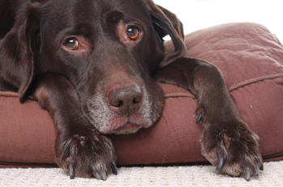
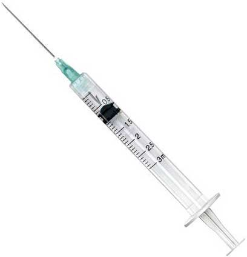
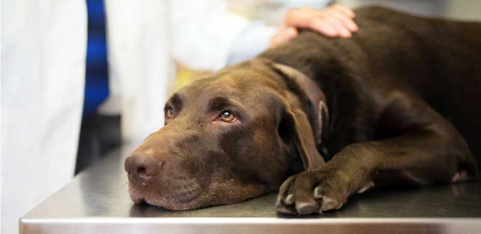

Mâncărimea este, din păcate, extrem de răspândită la câini, atât de frecventă, încât mulți proprietari de câini o consideră doar o parte normală a vieții câinelui lor. Dar mâncărimea constantă este departe de a fi normală - este neplăcută și stresantă pentru câine, poate duce rapid la leziuni ale pielii, dureri și infecții și, în multe cazuri, este un semn al unor probleme mult mai mari sub suprafață.
Identificarea și eliminarea cauzei
Sănătatea alimentară și digestivă joacă cu siguranță un rol major în aproape toate problemele pielii, fie direct, fie indirect, dar pot exista și alți factori în joc, așa că înainte de a intra în dietele de eliminare și remedii pe bază de plante, este important să examinăm mai întâi celelalte surse posibile de iritare a pielii:
1. Durere
Atunci când un câine suferă de durere sau disconfort, acesta poate începe să lingă sau să roască în mod compulsiv zona afectată. Atunci când acesta este cazul, linsul sau mușcăturile sunt de obicei limitate la zone mici și pot fi mai pronunțate în anumite momente ale zilei - de exemplu după exerciții.
Spinii sau stâncile ascuțite prinse între degetele de la picioare sau tampoanele pentru picioare sunt un vinovat obișnuit, așa că dacă câinele dvs. a început brusc să-și lingă sau să-și muște labele, asigurați-vă că le verificați cu atenție dacă există obiecte străine sau tăieturi.
Câinii care suferă de artrită sau displazie de șold / genunchi ar putea începe, de asemenea, să lingă în jurul articulațiilor afectate și pentru mulți câini, punctele fierbinți (zone localizate de inflamație a pielii și infecție bacteriană) pot provoca, de asemenea, iritații semnificative ale pielii.
Dacă bănuiți că durerea provoacă iritarea pielii câinelui dvs., consultați medicul veterinar despre opțiunile de tratament adecvate.
2. Paraziti
După cum v-ați putea aștepta, puricii, căpușele și acarienii sunt mâncărimi mici. Când câinele dvs. începe să se zgârie, merită întotdeauna să verificați zona iritată pentru a vedea dacă sunt târâtoare înfiorătoare. Căpușele sunt de obicei destul de ușor de observat, dar pentru a identifica în mod fiabil o infestare cu purici, cel mai bine este să folosiți un pieptene de purici.
Acarienii sunt insecte microscopice care sunt de fapt prezente pe pielea tuturor câinilor și rareori cauzează probleme, cu excepția cazului în care sistemul imunitar sau starea pielii câinelui devine compromisă.
Deși există câțiva tipuri diferite de acarieni ai pielii la câini, fiecare cu propriul set de simptome, cele mai frecvente semne ale unei infestări cu acarieni sunt căderea părului, roșu, pielea solzoasă și infecțiile secundare ale pielii și urechilor. Din păcate, deoarece sunt atât de mici, infestările cu acarieni pot fi, în general, confirmate doar de o răzuire a pielii de la medicul veterinar.
Dacă bănuiți că paraziții cauzează iritarea pielii câinelui, cereți medicului veterinar instrucțiuni cu privire la un tratament adecvat (în mod ideal natural) și apoi treceți la secțiunea cu alimente pentru sfaturi despre creșterea stării generale de sănătate pentru a face infestările viitoare mai puțin probabile.
3. Stresul sau plictiseala
La fel cum ne-am putea agita sau arunca unghiile atunci când suntem plictisiți sau anxioși, la fel și câinii noștri pot dezvolta răspunsuri fizice la provocările psihologice. Deși aceste răspunsuri pot lua mai multe forme, zgârierea, lingerea și / sau mestecarea sunt frecvente.
Există mai multe moduri de a reduce anxietatea și plictiseala câinelui dvs.:
Exercițiul fizic este extrem de important pentru orice câine, dar pentru câinii plictisiți sau anxioși, o activitate mai mare poate merge mult. Previne plictiseala în timp ce faceți exerciții și, de asemenea, ajută la arderea excesului de energie, astfel încât câinele să fie mai probabil să se odihnească calm după aceea. De asemenea, eliberează endorfine care au un efect calmant și înălțător asupra dispoziției.
Există o gamă întreagă de produse disponibile pentru păstrarea câinilor distrați și calmi, de la jucării și mestecături la difuzoarele de feromoni și calmarea suplimentelor pe bază de plante.
Problema este că mâncărimea constantă poate provoca în sine stresul, astfel încât să se constate dacă mâncărimea câinelui este cauza sau efectul stresului poate fi dificil.
Dacă bănuiți că plictiseala sau anxietatea îi determină câinele să se zgârie, să muște sau să lingă excesiv, încercați câteva dintre opțiunile de mai sus și apoi treceți la secțiunea de hrană de mai jos pentru sfaturi despre consolidarea sănătății generale a câinelui dvs. - atât mental cât și fizic.
4. Toxine
Multe tratamente pentru purici, căpușe și viermi conțin substanțe chimice foarte puternice care pot provoca iritații ale pielii și zgârieturi.
Și vaccinările pot duce la efecte secundare adverse, inclusiv probleme cu pielea. Mulți câini se confruntă cu erupții cutanate în zilele, săptămânile sau chiar lunile care urmează acestor tipuri de tratamente, astfel încât, de regulă generală, este întotdeauna mai bine să le mențineți la minimum (evitând vaccinările inutile de rapel, de exemplu) și să rămâneți la cele mai forme naturale de tratamente disponibile.
Dacă problemele de piele ale câinelui dvs. au început la scurt timp după ce ați primit un anumit medicament sau vaccinare, atunci nu veți dori, în mod evident, să administrați același tratament în viitor. Întrebați medicul veterinar despre alternative mai naturale sau, în cazul vaccinărilor de rapel, pentru informații despre testarea titrului.
Dieta corectă va îmbunătăți, de asemenea, sănătatea generală a câinelui și capacitatea acestuia de a face față toxinelor, așa că asigurați-vă că consultați secțiunea de alimente de mai jos.
5. Alergie la mediu
Contactul cu substanțe precum polenul, mucegaiul, șamponul, săpunul, erbicidele, îngrășămintele etc. sau cu insectele precum acarienii de praf sau acarienii de depozitare a alimentelor pot provoca iritații ale pielii la câini.
Dacă mâncărimea câinelui tău vine și pleacă, notează tipul de locuri și activități care au precedat imediat declanșările, precum și perioada anului, pentru a vedea dacă se poate trage un fir comun. Dacă o substanță problematică poate fi identificată, atunci poate fi posibilă doar evitarea acesteia sau eliminarea ei din mediul înconjurător.
Încă o dată, alimentele și rolul pe care le joacă în promovarea unui răspuns imun sănătos pot ajuta semnificativ la reducerea sensibilității la alergenii din mediu, așa că asigurați-vă că consultați și secțiunea alimentară de mai jos.
6. Mancarea
Ceea ce ne aduce în cele din urmă la mâncare. Dieta este absolut fundamentală pentru sănătatea pielii și a sănătății în general. Din experiența mea, aproximativ două treimi din sensibilitățile pielii canine pot fi clarificate doar prin măsuri dietetice și chiar și atunci când dieta nu este cauza directă, joacă în continuare un rol enorm în rectificarea situației și prevenirea episoadelor viitoare.
Sensibilitate alimentară
Câinii, la fel ca oamenii, pot dezvolta sensibilități la anumite alimente. Aceasta înseamnă că organismul lor nu poate digera alimentele în mod normal și, în schimb, reacționează la acesta într-un mod care poate provoca disconfort sau deteriorarea organismului.
Sensibilitățile alimentare se împart în două categorii: alergiile, care tind să fie destul de severe, implică un răspuns imun și sunt destul de rare; și intoleranțele care de multe ori se acumulează încet în timp, nu implică un răspuns imun și sunt mult mai răspândite.
Dacă sistemul unui câine este expus în mod repetat la un ingredient problematic, acesta poate duce la inflamații și deteriorarea tractului digestiv, perturbarea florei intestinale naturale și potențialul „sindrom intestinal cu scurgeri” prin care particulele alimentare nedigerate, toxinele și bacteriile intestinale pot fi capabile să trece prin peretele intestinal în sânge și provoacă ravagii pe tot corpul.
După cum ți-ai putea imagina, cel mai bun lucru pe care îl poți face pentru un câine sensibil la un anumit aliment este pur și simplu să nu-l hrănești. Dar mai întâi va trebui să aflați exact cu ce ingrediente sau ingrediente are câinele dvs. o problemă și poate fi dificil să spunem cel puțin.
Teste alergice
Veterinarii pot efectua teste de sensibilitate alimentară - de obicei doar pentru alergii, dar ocazional și pentru intoleranțe, dar ceea ce de obicei nu vă spun este că aceste teste sunt notoriu inexacte [1] [2]. Pentru a o spune într-un cuvânt veterinar preeminent: „niciunul dintre testele specifice disponibile în prezent nu s-a dovedit convingător că este util și mai multe s-au dovedit clar că sunt înșelătoare” [1]. Așadar, gândiți-vă de două ori înainte de a vă înscrie la orice test de alergie scump și, dacă faceți acest lucru, nu luați rezultatele ca evanghelie.
Dietele de eliminare
Dietele de eliminare (sau dietele de excludere așa cum se numesc uneori) pot fi de lungă durată și frustrante, dar în prezent sunt singura modalitate prin care trebuie să identificăm cu precizie ce alimente ar putea cauza problemele câinelui dvs.
Practic, acestea implică eliminarea oricăror ingrediente potențial problematice din dietă până când problemele scad cu opțiunea de a reintroduce apoi ingredientele unul câte unul pentru a vedea care dintre ele aduc problemele înapoi.
Dacă dieta de eliminare are succes, mâncărimea va începe să dispară în câteva săptămâni și va dispărea în întregime în următoarele săptămâni și luni, așa că aveți răbdare.
Dietele veterinare
Proteinele utilizate în multe diete veterinare sunt hidrolizate, ceea ce înseamnă că este mult mai puțin probabil să provoace o reacție alergică decât proteinele din carne regualare. Acest lucru le poate face un instrument util pe termen scurt în lupta împotriva sensibilităților pielii - de exemplu, ca bază pentru o dietă de eliminare, dar, din moment ce majoritatea dietelor pe bază de rețetă sunt, în opinia noastră, din punct de vedere nutrițional, sunt foarte slabe, nu am recomanda utilizarea lor pe termen lung termen.
În timp ce identificarea și eliminarea cauzei mâncărimii câinelui dvs. este un prim pas imens și crucial, rareori este sfârșitul poveștii. Sensibilitățile prelungite la alimente, infestările parazitare, expunerea la toxine și așa mai departe lasă deseori o urmă de distrugere în urma lor și readucerea câinelui la sănătatea deplină ar putea avea nevoie de o mână de ajutor.
Lasă mâncarea să fie medicamentul tău
În general vorbind, dietele de eliminare nu trebuie utilizate ca o soluție permanentă, așa că, după ce ați aflat ce ingrediente câinele dvs. poate și nu poate mânca în siguranță, va fi timpul să treceți la o dietă adecvată pe termen lung.
Un aliment de bună calitate, ambalat cu ingrediente benefice, bio-adecvate, cu o prelucrare minimă și fără umpluturi și aditivi de calitate inferioară, va promova sănătatea de la colon la strat și de la oase la creier, făcând problemele de sănătate de tot felul mai puțin frecvente și mai puțin severe.
Atunci când alegeți un aliment, în mod evident veți dori să evitați orice ingrediente pe care le-ați identificat ca fiind problematice în timpul dietei de eliminare, precum și oricare dintre ingredientele care sunt cel mai frecvent asociate cu sensibilitățile pielii. Acestea includ grau, lactate, soia, conservanti artificiali si coloranti, gaina si vita.
De asemenea, vă recomandăm să selectați filtrele „etichetare clară”, „hipoalergenică” și „naturală”, doar pentru a ne asigura că nu se strecoară nasties prin net.
Evaluările noastre nutriționale sunt menite să evidențieze ce produse sunt susceptibile de a fi cele mai benefice pentru câinele dvs. și care nu sunt așa că asigurați-vă că le considerați și în luarea deciziilor.
Suplimente
Există o gamă largă de suplimente care sunt comercializate pentru câinii cu probleme de piele și pentru a afla care va ajuta câinele dvs. particular va necesita cel puțin unele încercări și erori.
Omega de pește gras (ficat de cod, somon, hamsie, sardină etc.), de la krill sau din surse vegetale precum cânepa poate fi extrem de benefic pentru toți câinii, dar poate face minuni pentru câinii cu piele sensibilă.
Vitamine B9, B12, D și C, precum și zincul pot ajuta la promovarea funcției imune corecte, în timp ce magneziul ajută la producerea enzimelor și la reglarea histaminei. Seleniul este, de asemenea, important în controlul inflamației.
Dacă mâncărimea câinelui dvs. se datorează unei sensibilități alimentare, atunci există șanse mari ca problemele să fie și mai semnificative în interior, astfel încât suplimentele care vizează sănătatea digestivă poate ajuta cu adevărat. Lemnul deglicirrizat (DGL), ulmul alunecos, mucegaiul de mlaștină, extractul de aloe vera, L-glutamina (ideal alături de vitamina B6) sunt exemple excelente de suplimente naturale de sănătate digestivă.
Bacteriile intestinale joacă un rol crucial în sănătatea digestivă și generală, astfel încât completarea cu niște lactobacili buni sau probiotice din sol-bacterii poate fi cu adevărat benefică.
Încet și sigur se câștigă cursa
Pielea poate fi lentă pentru a răspunde la modificări, astfel încât testarea oricărui anumit aliment, supliment sau tratament adecvat va necesita timp și o observare atentă. Folosiți o abordare sistematică, testând câte un lucru odată, până când efectele sale pot fi măsurate corespunzător înainte de a trece la următorul.
Deci, iată-l. Mâncărimea este un simptom complex care poate proveni dintr-o serie de probleme. Managementul depinde de identificarea și eliminarea cauzei, urmate de măsuri de reparare a sistemului și de creștere a stării generale de sănătate pentru a reduce viitoarele apariții. Lucrul prin mâncărime poate fi dificil, dar rămâneți cu el - câinele dvs. merită!